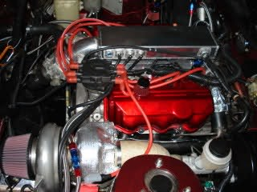
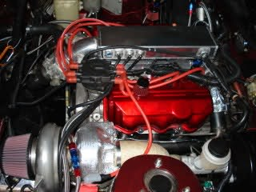

-
where can i get a lsd for my 86 z31 -
You need a I BELIEVE 5/87+ Turbo Z31 and will it be equipped with a CLSD (Clutch type limited slip)
Good luck finding one.
Unless you luck out at a junkyard, expect to pay north of $500.00 for one either here or on ebay. :nanan?re1SIKZ31 -86 SlickTop- R.I.P. 03/01/10 … Parted out :-(
… New Project: LS1 Miata. Complete. 510whp. 2500lbs.
1 Month Away from Rear Mount 76 --> 650-700whp.
 
 -
I BELIEVE it's 4/87 + Turbo. Isn't it time the value of these CLSD units went up along with everything else?1SIKZ31 wrote: You need a I BELIEVE 5/87+ Turbo Z31 and will it be equipped with a CLSD (Clutch type limited slip)
Good luck finding one.
Unless you luck out at a junkyard, expect to pay north of $500.00 for one either here or on ebay. :nanan?re
1988 300ZX Turbo, Shiro Special #760
1988 300ZX Turbo Automatic (wife's car)
1991 Hard-body 2WD
http://zccw.org/zccw/?page_id=1215 -
[quote]reddzx wrote:I have one with 140,000 miles sitting in my friends garage just waiting to be cleaned up and sand blasted and installed. :twisted: (I don't put dirty nasty parts in my car)Originally posted by 1SIKZ31 uais!
1SIKZ31 -86 SlickTop- R.I.P. 03/01/10 … Parted out :-(
uais!
1SIKZ31 -86 SlickTop- R.I.P. 03/01/10 … Parted out :-(
… New Project: LS1 Miata. Complete. 510whp. 2500lbs.
1 Month Away from Rear Mount 76 --> 650-700whp.
-
ok thanks ima deff look inot finding one -
My 4/87 has the CLSD, but oddly enough, no W-series engine.
1985 Nissan 300ZX 2+2- My first Z, back in the family
1987 Nissan 300ZX Turbo RIP 4/87 - 4/28/2011
Under Construction: 1986 Nissan 300ZX NA2T Slicktop
Originally posted by Tempestas

Copyright © 2006–. All rights reserved. Privacy Policy